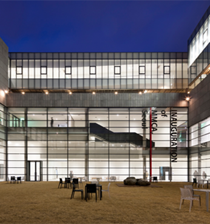
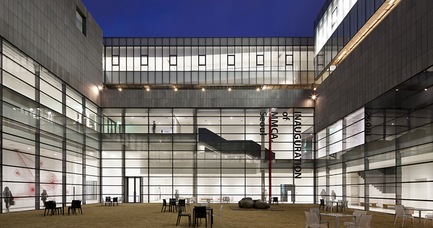
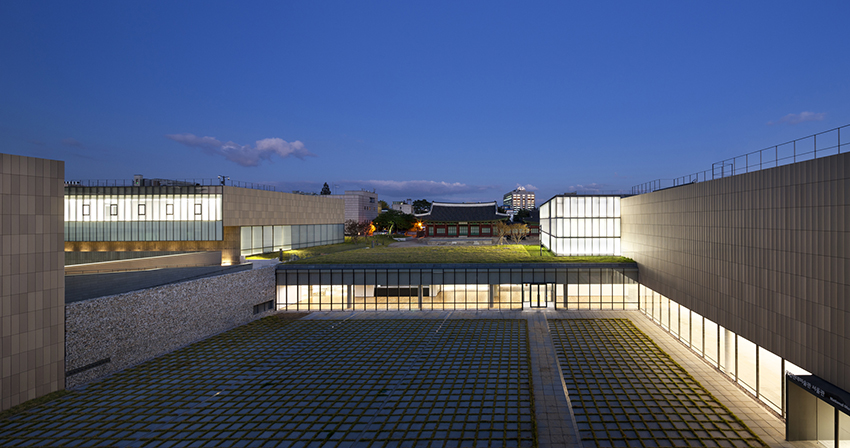
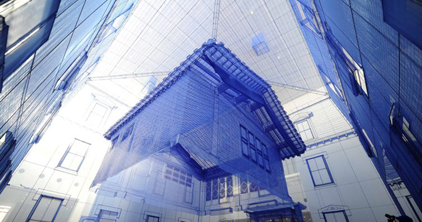

국립현대미술관
- 주소
- 서울특별시 종로구 소격동 165
- 문의
- 02)3701-9500
- 시간
- 10:00 - 18:00(매주 월요일 휴관)
- 홈페이지
- https://www.mmca.go.kr/
한국 근·현대 미술작품을 체계적으로 수집, 보존 및 전시하고, 국제 미술교류를 통하여 현대미술발전에 기여할 목적으로 설립되었다. 1969년 10월 20일 경복궁(현 국립민속박물관)에 개관하였으며, 1973년 덕수궁으로 옮겼다가(덕수궁 현대미술관), 1986년 8월 현재의 위치로 이전하였다.

- 
- 